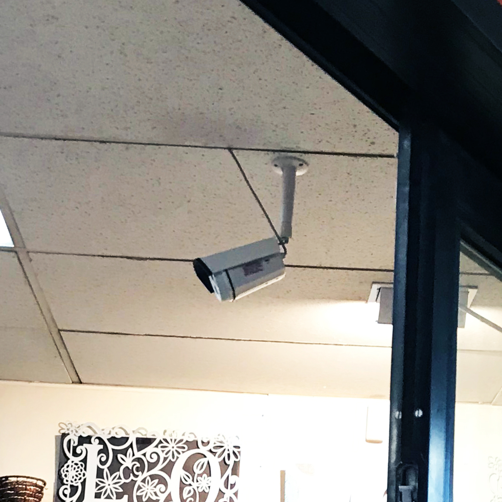
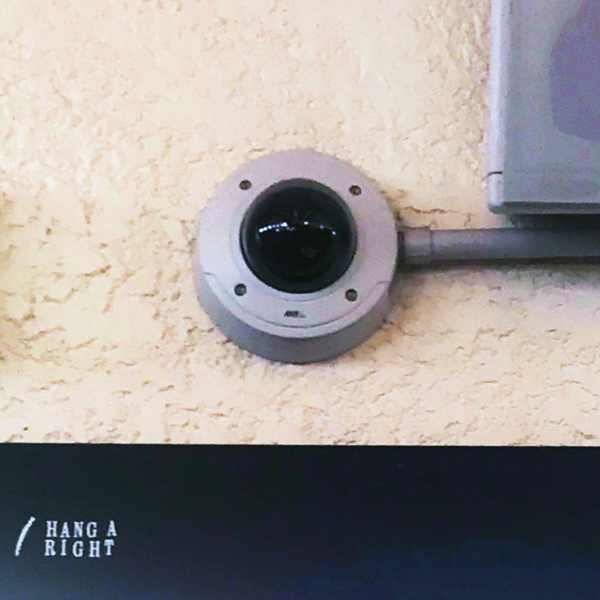
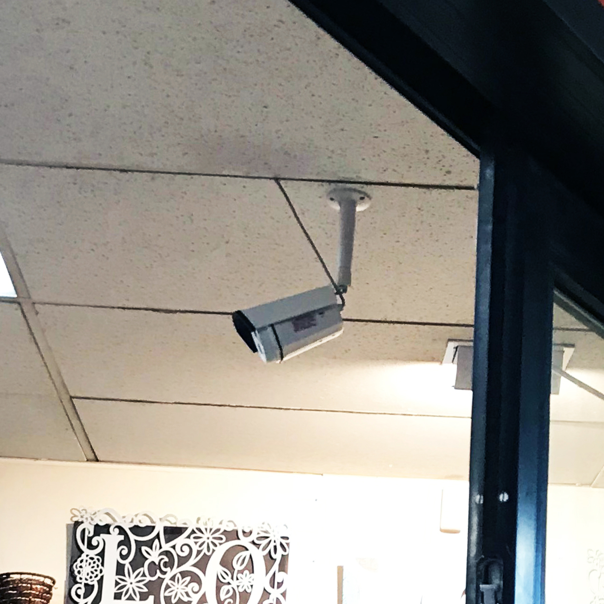
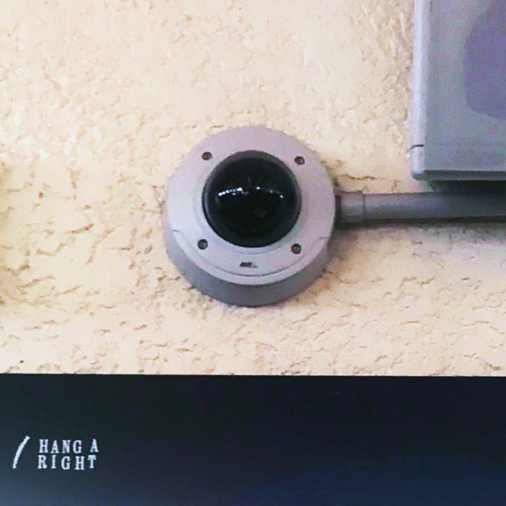
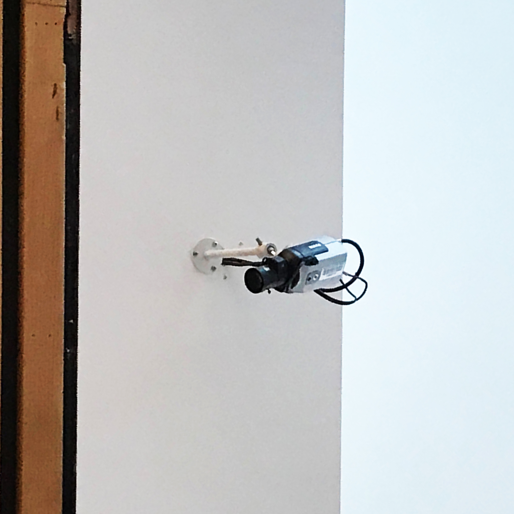
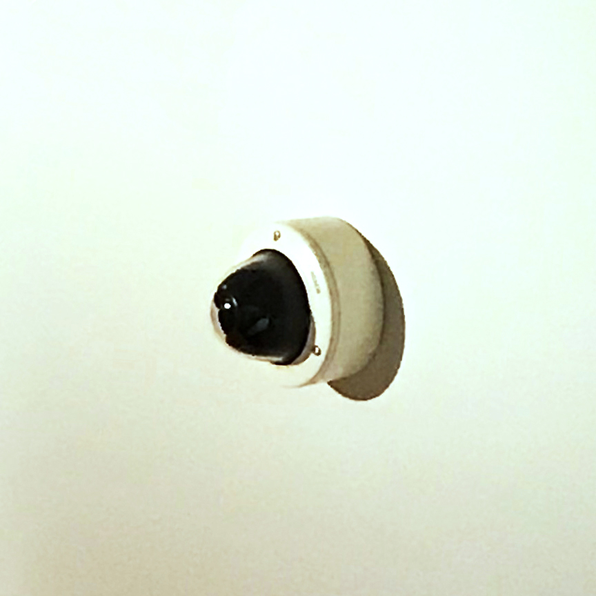
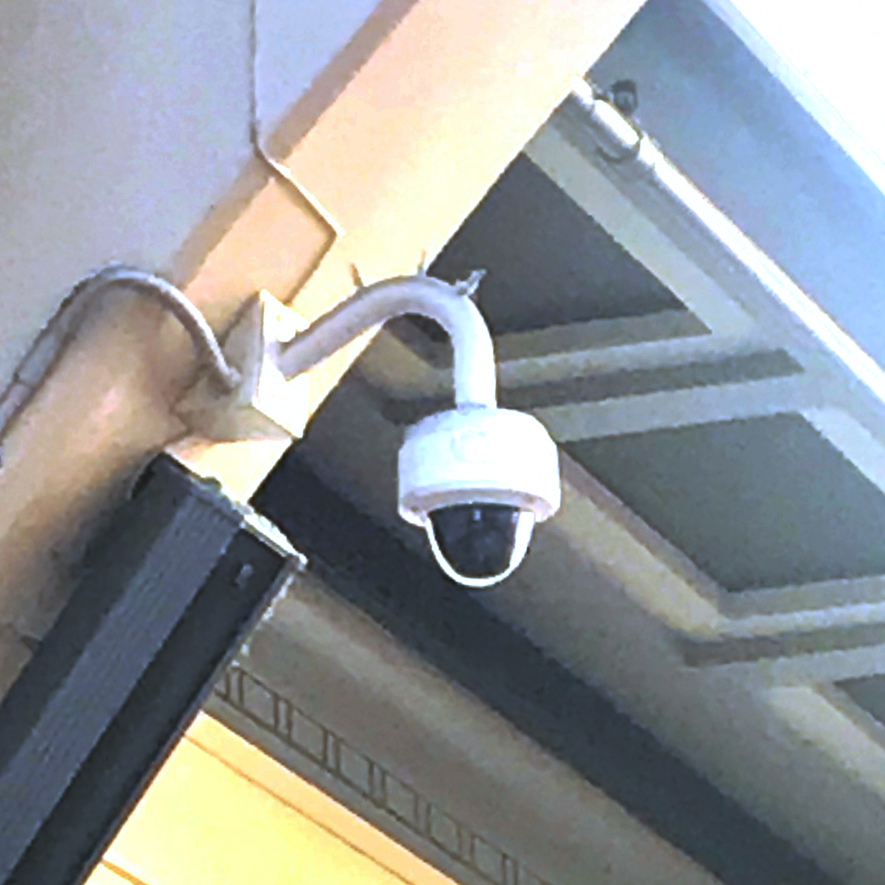
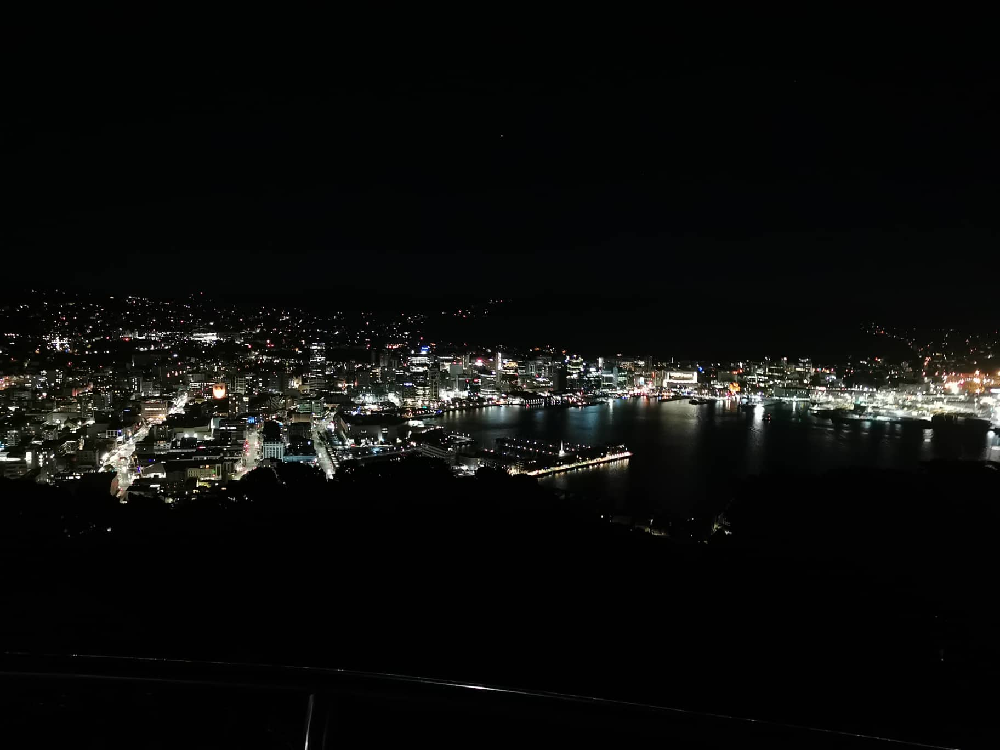

Closed Circuit Television Cameras
 



Closed-circuit television cameras are used as security devices in almost every public place in the city. These CCTV cameras are the eyes of the city as whatever has been recorded in public are sent to larger networks, making us all connected and a part of the network.
  
Cameras Cameras Cameras Cameras Cameras
Links:
For more information on Wellingtons CCTV Cameras, visit:
https://wellington.govt.nz/
Information gathered sourced from:
https://wellington.govt.nz/
Around
the City
The images of CCTV Cameras shown above have been captured from different areas in the city- shops, public transport, schools as well as the museum of Te Papa. This surveillance system is a "council-led" initiative, that is partnered ans supported by the Wellington Central Police.
The footage captured links to a network monitored by camera based volunteers through multiple large screens which allow cameras to be viewed simultaneously.
